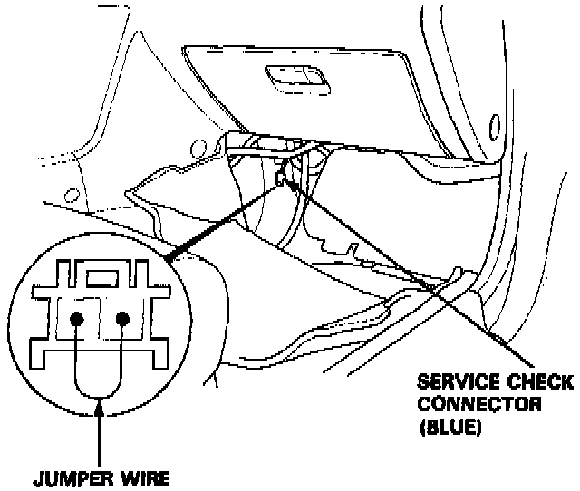
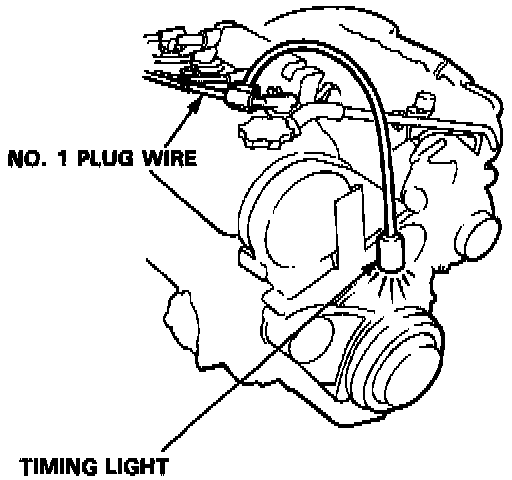
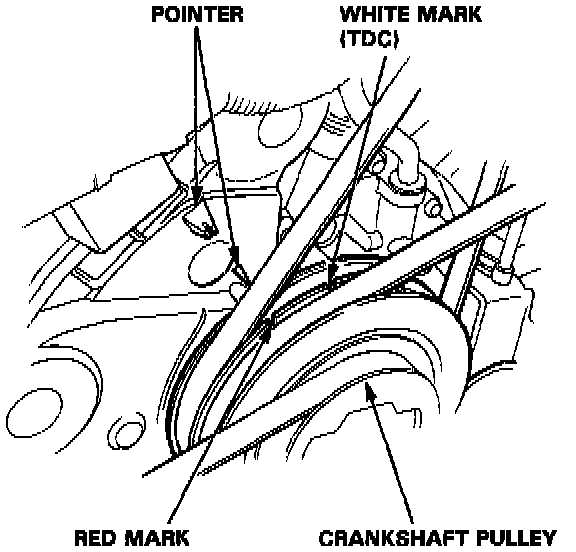
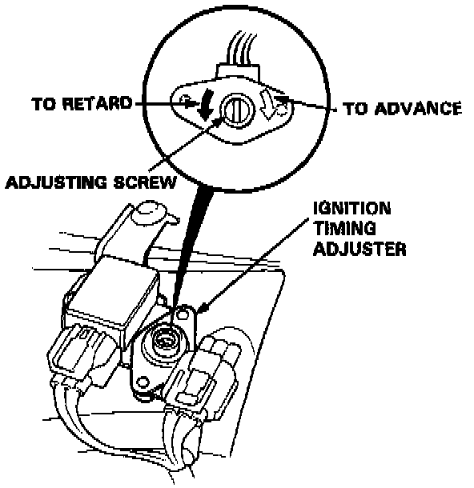

Ignition Timing: Adjustments
PROCEDURECAUTION: All SRS electrical wiring harnesses are covered with yellow outer insulation. Before disconnecting the SRS wire harness, install the short connector(s) on the airbag(s). Replace the entire affected SRS harness assembly if it has an open circuit or damaged wiring.
1. Start the engine and allow it to warm up (the radiator fan comes on).
2. Pull out the service check connector (BLU) located under the middle of the dash.

Connect the WHT/GRN and BRN terminals with a jumper wire.
3. Check the idle speed. Adjust the idle speed, if necessary, by turning the idle adjusting screw.

4. Connect a timing light to the No. 1 ignition wire; while the engine idles, point the light toward the pointer on the timing belt cover.
5. Inspect ignition timing at idle speed.

Ignition Timing: 15 degrees +/- 2 degrees BTDC (RED)
Manual Transmission (at 700 +/- 50 rpm in neutral)
Automatic Transmission (at 700 +/- 50 rpm in [N] or [P]
NOTE: All electrical systems should be turned off.
6. If it is necessary to adjust the ignition timing, remove the ignition timing adjuster.
- Drill the two rivets off with a 5 mm (3/16 in) drill bit, then separate the cover from the adjuster.
CAUTION: Do not damage the adjuster when removing the rivets.

7. Adjust the ignition timing by turning the adjusting screw on the ignition timing adjuster.
8. Remove the jumper wire from the service check connector.
9. After adjusting, reinstall the cover on the ignition timing adjuster with new rivets.